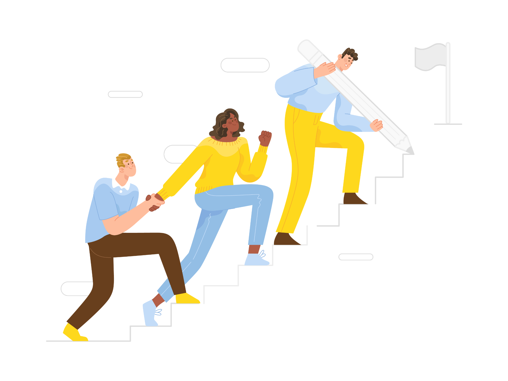
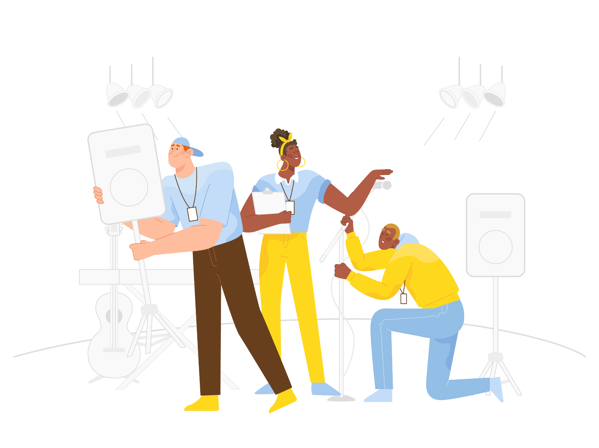
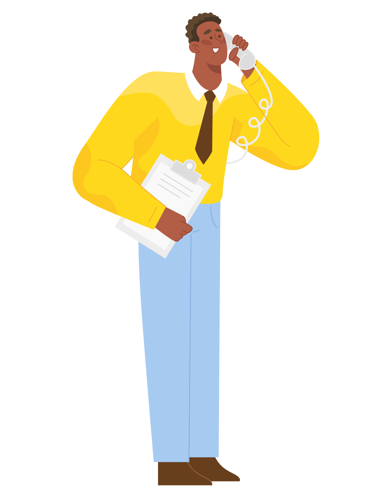
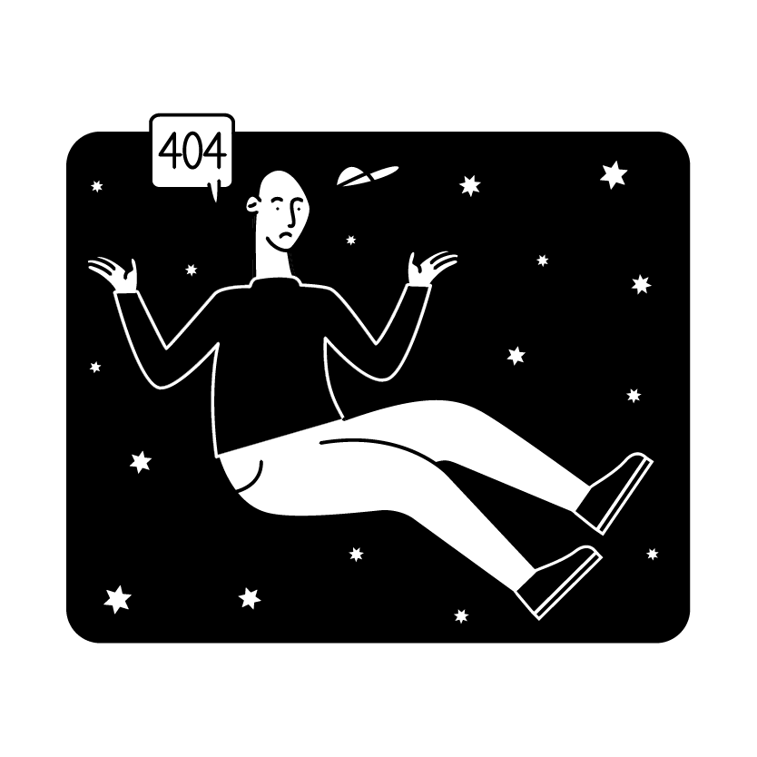
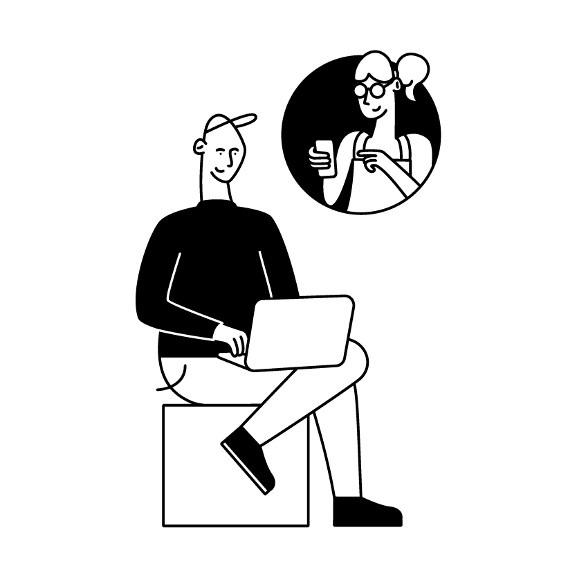
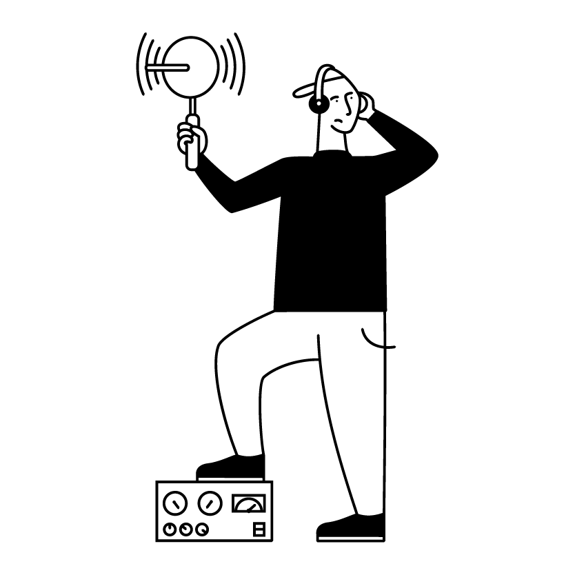
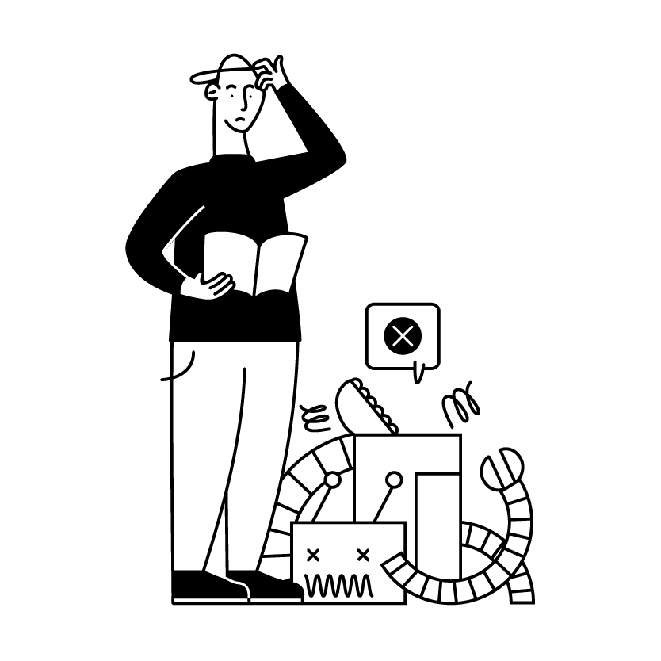
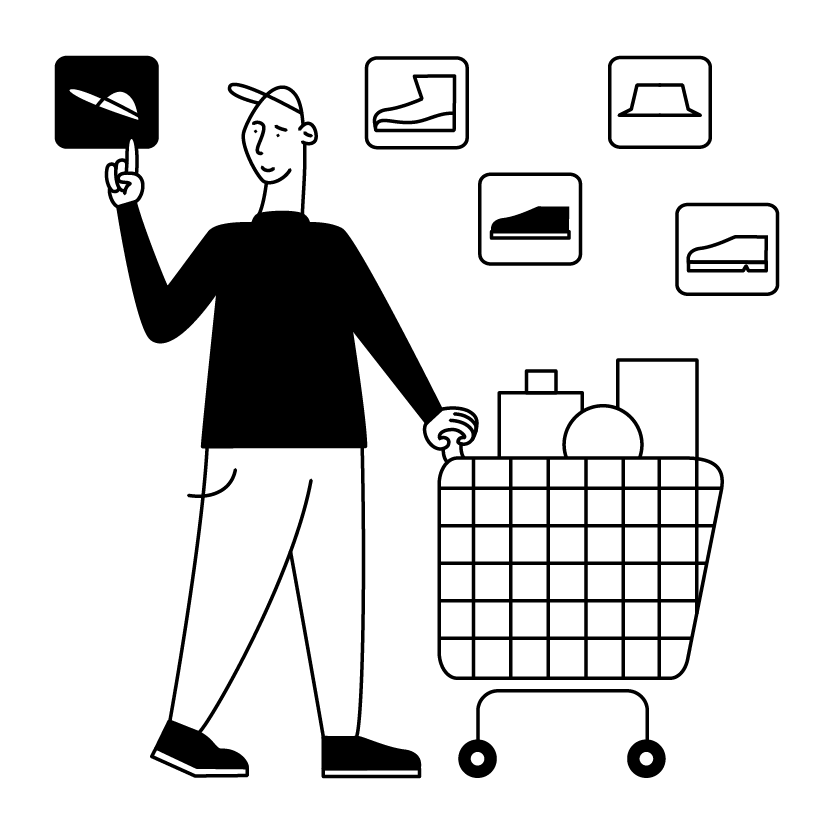
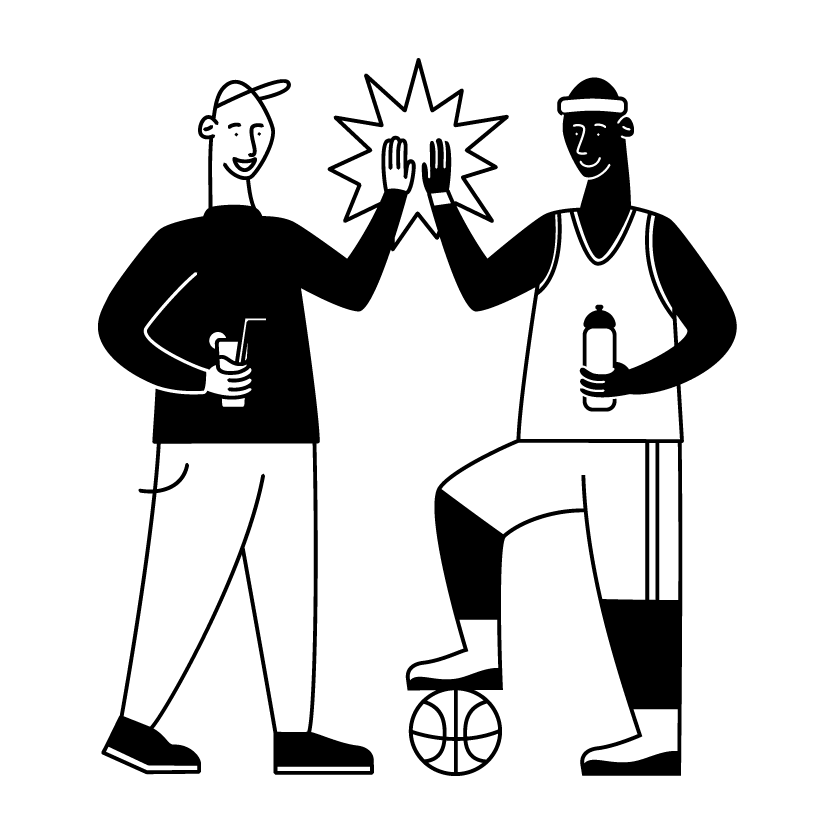

COMPOSITION
Character placement and scale are used to create a clear reading order and establish a central narrative focus.
Illustrator · Cartoonist · Character & Motion Artist
Character-driven illustration, editorial visual storytelling and 3D motion focused on expressive posing, composition and consistent visual systems.
SELECTED WORK ↓Collaborative scenes, editorial storytelling and character-led visual communication.


A modular illustration language built around simplified forms, expressive poses, controlled palettes and readable visual hierarchy.

A reduced black-and-white visual language designed around silhouette, line economy, gesture and rapid conceptual communication.






Character placement and scale are used to create a clear reading order and establish a central narrative focus.
Simplified silhouettes and exaggerated proportions help actions remain legible even at reduced viewing sizes.
A restricted yellow, blue, white and black palette creates visual consistency while allowing focal characters and actions to remain distinct.
Recurring proportion, facial treatment and styling allow different scenes to remain part of a unified visual system.
Props, gesture and spatial relationships are used to communicate the concept without relying on explanatory text.
Animation studies exploring locomotion, weight, expressive posing and character-specific movement.
Whether working in a static illustration or a moving character, I focus on readable silhouettes, balance, gesture and pose clarity.
I’m an illustrator and visual artist focused on character-driven storytelling, editorial composition and 3D character motion. My work combines simplified shape language, expressive posing and clear visual hierarchy to communicate ideas quickly and consistently across scenes.
Available for remote illustration and creative production projects.